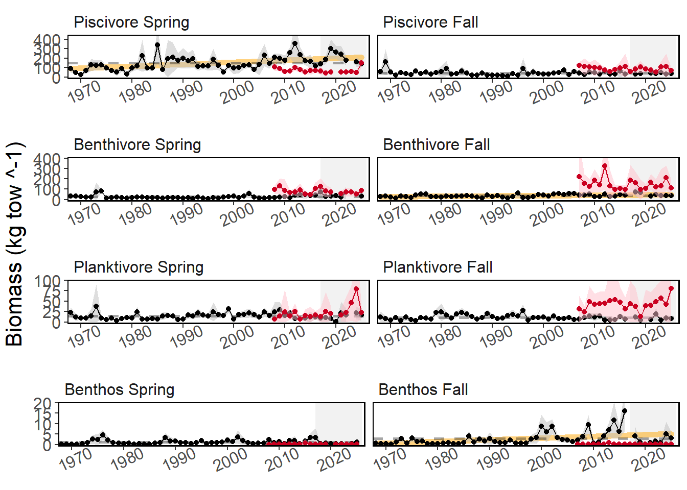
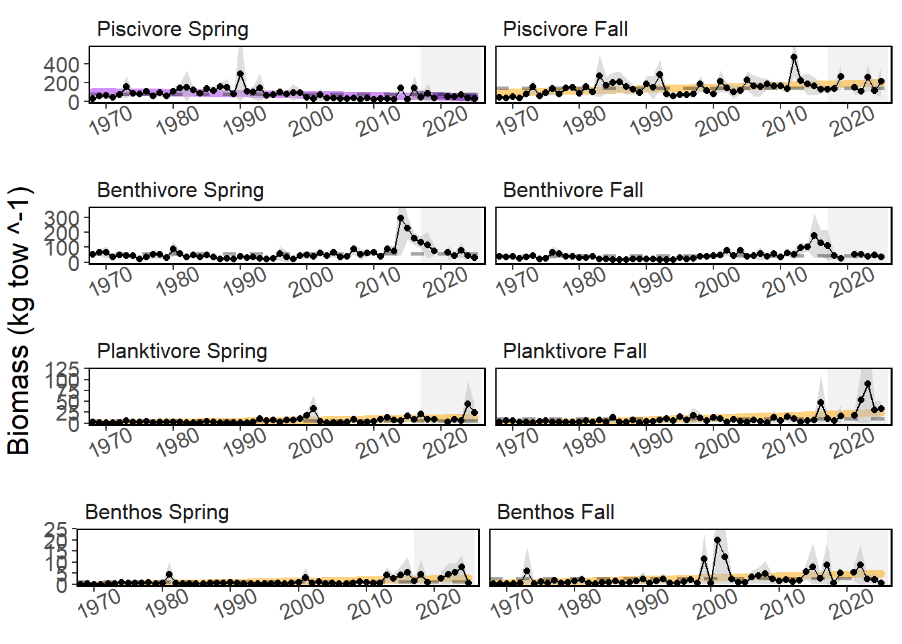
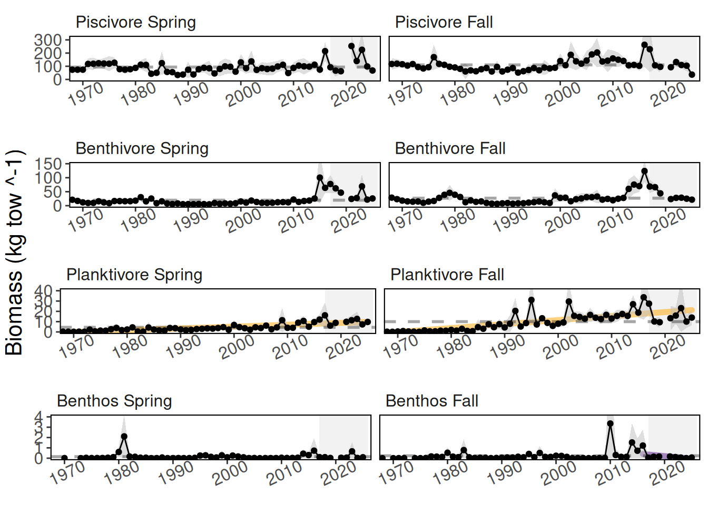

2 Aggregate Survey Biomass
Description: Aggregate biomass from Northeast Fisheries Science Center (NEFSC) bottom trawl survey.
Indicator family:
Contributor(s): Sean Lucey, Andrew Beet, and Sarah Gaichas.
Affiliations: NEFSC
2.1 Introduction to Indicator
The NEFSC has been conducting bi-annual bottom trawl surveys along the Northeast US Continental Shelf for over 60 years. The survey is conducted in the spring and fall of each year. The fall survey began in 1964 and the spring in 1967. The survey is designed as a stratified random survey. We have calculated stratified means with sets of survey strata that closely align with our Ecosystem Production Unit boundaries. Species are aggregated into feeding guilds in order to gauge the relative stability and health of the system.
2.2 Key Results and Visualizations
Aggregate biomass levels have been relatively stable over time. Black points represent data from the Northeast Fisheries Science Center (NEFSC) bottom trawl survey. Red points represent data from the NEAMAP inshore survey.



2.3 Indicator statistics
Spatial scale: By EPU
Temporal scale: Spring (March-May) and Fall (September-November)
Synthesis Theme:
2.4 Implications
Aggregate biomass is a holistic indicator that reveals the underlying ecosystem that the fisheries operates within. While there has been evidence of overfishing of key commercial species, the overall ecosystem is relatively stable.
2.5 Get the data
Point of contact: Andrew Beet (Andrew.Beet@NOAA.gov)
ecodata name: ecodata::aggregate_biomass
Variable definitions
- Name: Guild Season Biomass Index; Description: Stratified mean biomass index of an aggregate group of species. Guilds include Benthivore, Benthos, Other, Piscivore, and Planktivore. Season is either Spring or Fall. For example “Benthivore Spring Biomass Index”; Units: kg tow^-1
- Name: Guild Season Biomass Index - inshore; Description: Stratified mean biomass index of an aggregate group of species using only strata designated as inshore. Guilds include Benthivore, Benthos, Other, Piscivore, and Planktivore. Season is either Spring or Fall. For example “Benthivore Spring Biomass Index - inshore”; Units: kg tow^-1
- Name: Guild Season Biomass Index - offshore; Description: Stratified mean biomass index of an aggregate group of species using only strata designated as offshore. Guilds include Benthivore, Benthos, Other, Piscivore, and Planktivore. Season is either Spring or Fall. For example “Benthivore Spring Biomass Index - inshore”; Units: kg tow^-1
- Name: Guild Management Body managed species - Season Biomass Index; Description: Stratified mean biomass index of an aggregate group of managed species. Guilds include Benthivore, Benthos, Other, Piscivore, and Planktivore. Season is either Spring or Fall. Management bodies include Mid-Atlantic Fisheries Management Council (MAFMC), New England Fisheries Management Council (NEFMC), jointly managed by MAFMC and NEFMC (JOINT), and species managed by other entities (Other). For example “Benthivore MAFMC managed species - Spring Biomass Index”; Units: kg tow^-1
- Name: Guild Management Body managed species - Season Biomass Index - inshore; Description: Stratified mean biomass index of an aggregate group of managed species using only strata designated as inshore. Guilds include Benthivore, Benthos, Other, Piscivore, and Planktivore. Season is either Spring or Fall. Management bodies include Mid-Atlantic Fisheries Management Council (MAFMC), New England Fisheries Management Council (NEFMC), jointly managed by MAFMC and NEFMC (JOINT), and species managed by other entities (Other). For example “Benthivore MAFMC managed species - Spring Biomass Index - inshore”; Units: kg tow^-1
- Name: Guild Management Body managed species - Season Biomass Index - offshore; Description: Stratified mean biomass index of an aggregate group of managed species using only strata designated as offshore. Guilds include Benthivore, Benthos, Other, Piscivore, and Planktivore. Season is either Spring or Fall. Management bodies include Mid-Atlantic Fisheries Management Council (MAFMC), New England Fisheries Management Council (NEFMC), jointly managed by MAFMC and NEFMC (JOINT), and species managed by other entities (Other). For example “Benthivore MAFMC managed species - Spring Biomass Index - inshore”; Units: kg tow^-1
- Name: Guild Season Standard Error; Description: Variance associated with the stratified mean biomass index of an aggregate group of species. Guilds include Benthivore, Benthos, Other, Piscivore, and Planktivore. Season is either Spring or Fall. For example “Benthivore Spring Standard Error”; Units: kg tow^-1
- Name: Guild Season Biomass Index - inshore; Description: Variance associated with the stratified mean biomass index of an aggregate group of species using only strata designated as inshore. Guilds include Benthivore, Benthos, Other, Piscivore, and Planktivore. Season is either Spring or Fall. For example “Benthivore Spring Standard Error - inshore”; Units: kg tow^-1
- Name: Guild Season Biomass Index - offshore; Description: Variance associated with the stratified mean biomass index of an aggregate group of species using only strata designated as offshore. Guilds include Benthivore, Benthos, Other, Piscivore, and Planktivore. Season is either Spring or Fall. For example “Benthivore Spring Standard Error - inshore”; Units: kg tow^-1
- Name: Guild Management Body managed species - Season Biomass Index; Description: Variance associated with the stratified mean biomass index of an aggregate group of managed species. Guilds include Benthivore, Benthos, Other, Piscivore, and Planktivore. Season is either Spring or Fall. Management bodies include Mid-Atlantic Fisheries Management Council (MAFMC), New England Fisheries Management Council (NEFMC), jointly managed by MAFMC and NEFMC (JOINT), and species managed by other entities (Other). For example “Benthivore MAFMC managed species - Spring Standard Error”; Units: kg tow^-1
- Name: Guild Management Body managed species - Season Biomass Index - inshore; Description: Variance associated with the stratified mean biomass index of an aggregate group of managed species using only strata designated as inshore. Guilds include Benthivore, Benthos, Other, Piscivore, and Planktivore. Season is either Spring or Fall. Management bodies include Mid-Atlantic Fisheries Management Council (MAFMC), New England Fisheries Management Council (NEFMC), jointly managed by MAFMC and NEFMC (JOINT), and species managed by other entities (Other). For example “Benthivore MAFMC managed species - Spring Standard Error - inshore”; Units: kg tow^-1
- Name: Guild Management Body managed species - Season Biomass Index - offshore; Description: Variance associated with the stratified mean biomass index of an aggregate group of managed species using only strata designated as offshore. Guilds include Benthivore, Benthos, Other, Piscivore, and Planktivore. Season is either Spring or Fall. Management bodies include Mid-Atlantic Fisheries Management Council (MAFMC), New England Fisheries Management Council (NEFMC), jointly managed by MAFMC and NEFMC (JOINT), and species managed by other entities (Other). For example “Benthivore MAFMC managed species - Spring Standard Error - inshore”; Units: kg tow^-1
Indicator Category:
2.7 Accessibility and Constraints
No response
tech-doc link https://noaa-edab.github.io/tech-doc/aggregate_biomass.html